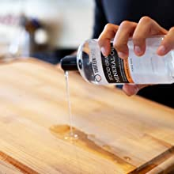

Pues el uso regular de aceite mineral te permite mantener el bonito color natural de la madera, a la vez que le da cierto nivel de protección. No es pegajoso y una vez absorbido por la madera no mancha y sobre todo y más importante, no es tóxico.
